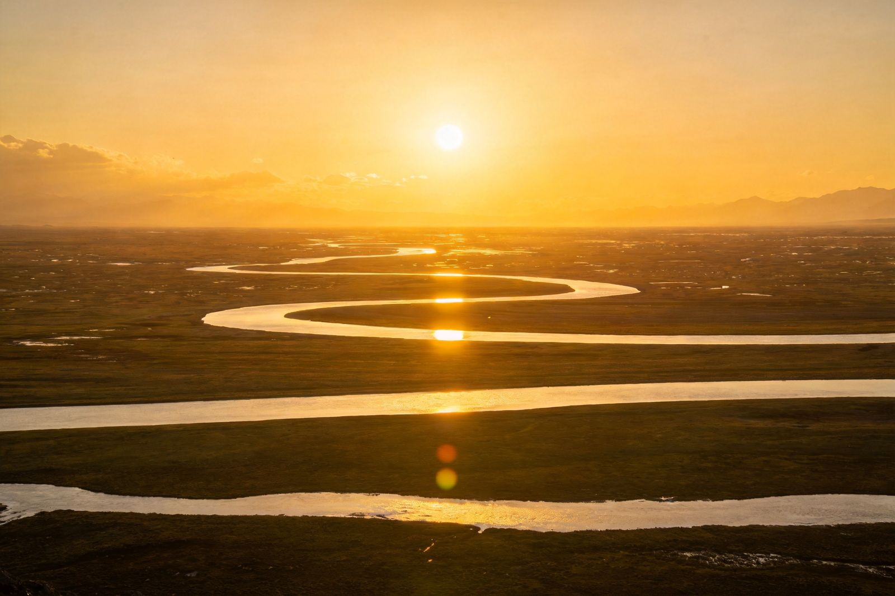
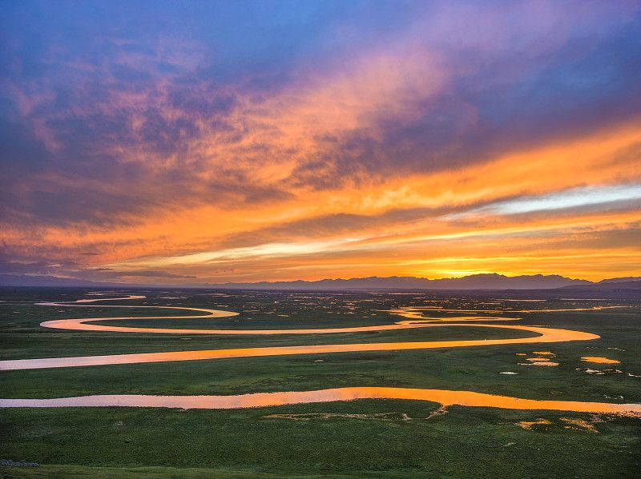
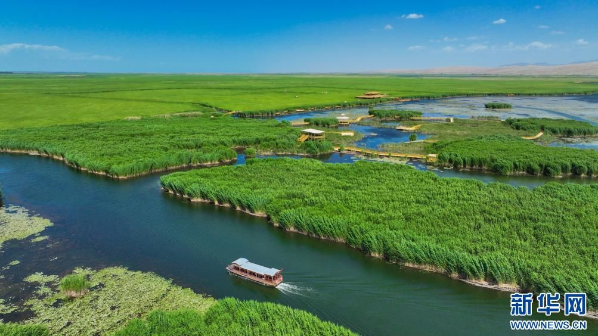
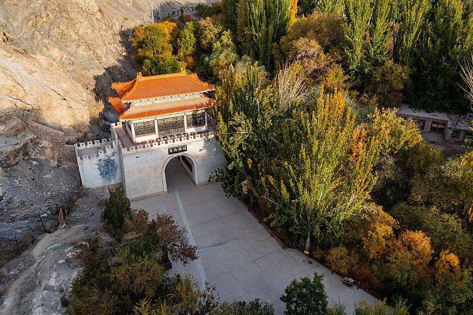
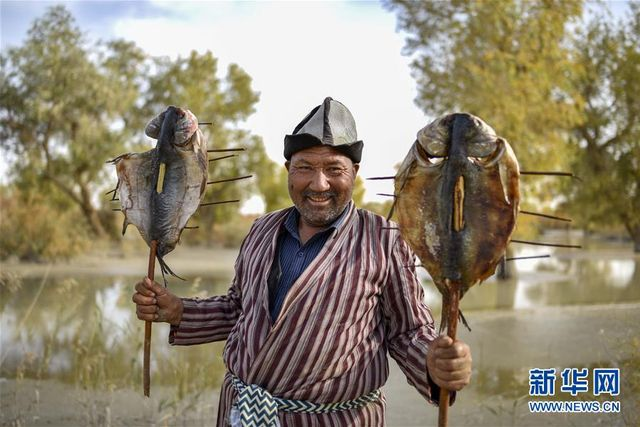
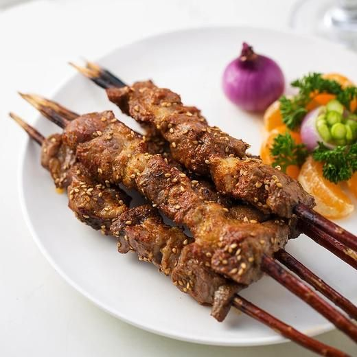

封面
总览
行前·交通·住
Day1 草原
Day2 博湖
Day2 铁门关
Day3 罗布人
美食
组合·贴士
安全

九曲十八弯 · 梨城 · OASIS
库尔勒
巴音布鲁克 · 博斯腾湖 · 铁门关
草原日落
最大淡水湖
雄关
罗布烤鱼
新疆 · 巴音郭楞
A5 口袋手册
· 深度漫游
1
/ 10
库尔勒
动线总览
3 天怎么玩
Route Overview
D1
全天
巴音布鲁克草原
九曲十八弯日落 · 白天鹅
D2
上午
博斯腾湖
芦苇荡游船 · 莲海湖
D2
下午
铁门关
'天下最后一关' · 公主岭
D3
全天
罗布人村寨
胡杨 · 烤鱼 · 沙漠
TIP
库尔勒是南疆巴州首府、'梨城'；草原壮阔、湖泊宁静、雄关厚重，绿洲+草原+历史一次看全。
TIP
🎫 巴音布鲁克约 70 元+区间车、博斯腾湖码头按线收费、铁门关约 20 元、罗布人村寨约 40 元；以景区当日公示为准。
2
/ 10
库尔勒
行前准备
出发前，记住 3 件事
Before You Go
🚄 怎么去 · 住哪
飞机：库尔勒机场，疆内直飞乌鲁木齐、喀什等
火车：库尔勒站，南疆铁路要冲
自驾：G30 连霍高速接 G218，天山南麓
住市区人民东路 / 孔雀河沿岸，夜逛方便
📅 最佳时节
5-6 月：草原返青，鲜花遍地
7-9 月：绿色草原，天鹅成群
9 月底-10 月：金黄草原 + 库尔勒香梨上市
🎒 关键装备
草原昼夜温差大，备薄羽绒 / 抓绒
防晒霜、墨镜、遮阳帽（高原紫外线强）
舒适徒步鞋（铁门关、罗布人村寨沙地）
TIP
草原门票+区间车以当日公示为准；山区天气多变，随身带雨具。
3
/ 10
库尔勒
Day 1 · 草原
D1 巴音布鲁克
草原辽阔日落壮
库尔勒
▶
巴音布鲁克镇
▶
九曲十八弯观景台
▶
天鹅湖

九曲十八弯 · 九个太阳
🌄 巴音布鲁克草原
中国第二大草原，天山腹地高山草原
开都河蜿蜒成
九曲十八弯
，日落可见"九个太阳"
天鹅湖
：国家重要湿地，白天鹅/灰鹤栖息
看点：辽阔草甸、牛羊如云、雪山背景
玩法
傍晚到九曲十八弯观景台等日落最惊艳；夏季白天鹅在沼泽草甸觅食，记得带长焦。
4
/ 10
库尔勒
Day 2 · 博湖
D2 博斯腾湖
新疆最大淡水湖
库尔勒市区
▶
博湖县
▶
芦苇荡码头
▶
莲海湖

芦苇荡 · 游船泛湖
🌊 博斯腾湖
新疆最大淡水湖
，全国四大芦苇产地之一
盛夏万亩芦苇青翠，水道纵横如迷宫
游船 / 快艇穿行苇丛，湖风清爽
莲海湖
：夏季荷开，湿地生态
玩法
上午湖区光线温柔，芦苇+倒影+游船最出片；码头按线路收费，选芦苇荡往返约 1 小时。
5
/ 10
库尔勒
Day 2 · 铁门关
D2 铁门关
'天下最后一关'
博湖
▶
铁门关景区
▶
关楼
▶
公主岭

铁门关 · 丝路雄关
🏯 铁门关 · 孔雀河出山口
扼孔雀河峡谷，古丝绸之路中道咽喉，
'天下最后一关'
关名：中国 26 名关最西一座雄关
关旁绝壁刻
'襟山带河'
，公主岭有爱情传说
历代名人：张骞、班超饮马孔雀河，玄奘西行经此
玩法
登关楼远眺峡谷绿洲，关下孔雀河清澈；流程约 1 小时，门票约 20 元。
6
/ 10
库尔勒
Day 3 · 罗布人
D3 罗布人村寨
塔里木河畔的原生态
库尔勒
▶
尉犁县
▶
罗布人村寨
▶
沙漠胡杨

罗布人 · 胡杨林烤鱼
🏜️ 罗布人村寨
塔里木河 / 塔克拉玛干沙漠交汇，胡杨环抱
罗布人是
沙漠捕鱼人
，以罗布泊为家
红柳枝挑鱼、胡杨木烤制，原始渔猎风味
沙山滑沙、骆驼骑行、日落胡杨剪影
玩法
亲手看胡杨烤鱼制作；傍晚沙漠+胡杨+落日最上镜，门票约 40 元，含区间车。
7
/ 10
库尔勒
风味美食
南疆风味，一口梨城
Local Flavors

罗布人烤鱼
红柳枝挑鱼、胡杨木烤制
招牌
红柳烤肉 / 库麦其
红柳枝串肉香；沙坑烤饼'沙漠披萨'
🍢 必吃清单
罗布人烤鱼
：沙漠胡杨风味，肉质紧实
红柳烤肉
：红柳枝清香，南疆特色
库麦其
：沙坑烤制的'沙漠披萨'
手抓饭 / 大盘鸡 / 馕坑肉
：新疆经典
牦/羊酸奶
：浓稠微酸，解腻
库尔勒香梨
：皮薄多汁，秋季正当时
TIP
市区夜市/美食城可尝遍烤串与酸奶；罗布人烤鱼多在村寨现烤现吃，最地道。
8
/ 10
库尔勒
组合 · 天鹅河
串联玩法 & 贴士
Tips & Combos
天鹅河 · 城市生态河
🌆 市区补玩 · 巴州博物馆
天鹅河景区
（AAAA）：岑参/班超雕塑、梦幻音乐喷泉，晚景佳
巴州博物馆
：小河古墓、楼兰美女、楼兰故城遗物
库尔勒香梨园：秋季可采摘，感受'梨城'
🚗
交通衔接
草原/村寨较远，建议包车或自驾；市区内打车方便。
💰
组合建议
3 天 2 夜：草原+博湖+铁门关+罗布人村寨，节奏从容可夜宿尉犁。
TIP
天鹅河喷泉多夜间开放，先查当天时刻再安排市区夜游。
9
/ 10
库尔勒
旅行安全
安全 & 平安出行
Stay Safe
🌡️
气候变化
草原山区海拔约 2500m，昼夜温差大，保暖 + 防晒兼顾。
☀️
防晒补水
高原紫外线强，墨镜、防晒霜、备用饮水必备。
🐫
户外注意
沙漠/沙山勿擅自远走，滑沙听从向导，保管电子设备防沙。
🚗
行车安全
县域公路长、测速多，谨慎驾驶；不去未开放保护区。
📶
信息留白
门票价格与开放时间以景区当日公示为准。
TIP
尊重当地民族风俗与宗教习惯，文明出行，留下美好回忆。
10
/ 10
库尔勒 · 南疆绿洲草原 / MADE WITH CARE BY MrdT
Insta360
记录美好
记录美好生活
相机指南 · CAMERA GUIDE